Pokémon Rojo y Verde
|
Descripción: Pokémon Rojo y Pokémon Verde son los primeros videojuegos de Pokémon de la historia, el primer paso que dio esta saga para convertirse en lo que es hoy en día.
Fecha de publicación: 27 de febrero de 1996 Plataforma: Game Boy Publicado por: Nintendo Desarrollado por: Game Freak | 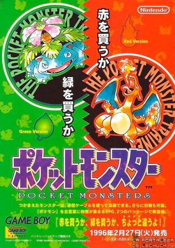 |
Pokémon Edición Rojo y Azul
|
Descripción: Pokémon Edición Roja y Pokémon Edición Azul fueron los primeros juegos de Pokémon que se lanzaron fuera de Japón.
Fecha de publicación: 28 de septiembre de 1998 (EE. UU.) y 5 de octubre de 1999 (Europa) Plataforma: Game Boy (mejorado para Super Game Boy ) , Nintendo 3DS ( Consola Virtual ) Publicado por: Nintendo Desarrollado por: Game Freak | 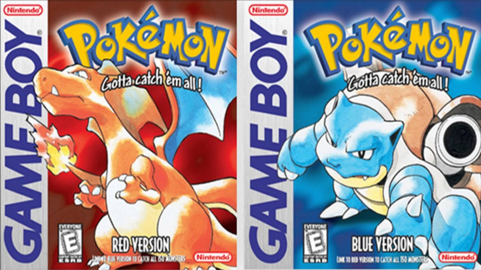 |
Pokémon Amarillo
|
Descripción: Pokémon Amarillo es la tercera edición de los primeros videojuegos de Pokémon del género RPG para Game Boy. Es muy similar a Pokémon Red y Blue.
Fecha de publicación: 12 de octubre de 1999 (Japón), 16 de septiembre de 1999 (EE. UU.) y 1 de octubre de 2000 (Europa) Plataforma: Game Boy (con soporte para Super Game Boy) Publicado por: Nintendo Desarrollado por: Game Freak | 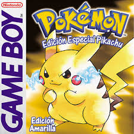 |
Pokémon Oro y Plata
|
Descripción: También llamados "Pokémon Edición Oro" y "Pokémon Edición Plata", con estos videojuegos se añadió un total de 100 Pokémon más a los anteriormente capturables, mediante la aparición de una nueva región (Johto).
Fecha de publicación: 21 de noviembre de 1999 (Japón), 2 de abril de 2000 (EE. UU.) y 6 de octubre de 2000 (Europa) Plataforma: Game Boy Color, Nintendo 3DS (Consola Virtual) Publicado por: Nintendo Desarrollado por: Game Freak | 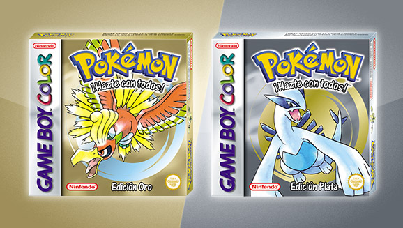 |
Pokémon Cristal
|
Descripción: Pokémon Crystal Version es un videojuego de rol el cual sirvió como una edición mejorada de los títulos de 1999 Pokémon Oro y Plata , es la entrada final en la segunda generación de la serie de juegos Pokémon.
Fecha de publicación: 14 de diciembre de 2000 (Japón), 29 de julio de 2001 (EE. UU.) y 2 de noviembre de 2001 (Europa) Plataforma: Game Boy Color Publicado por: Nintendo Desarrollado por: Game Freak | 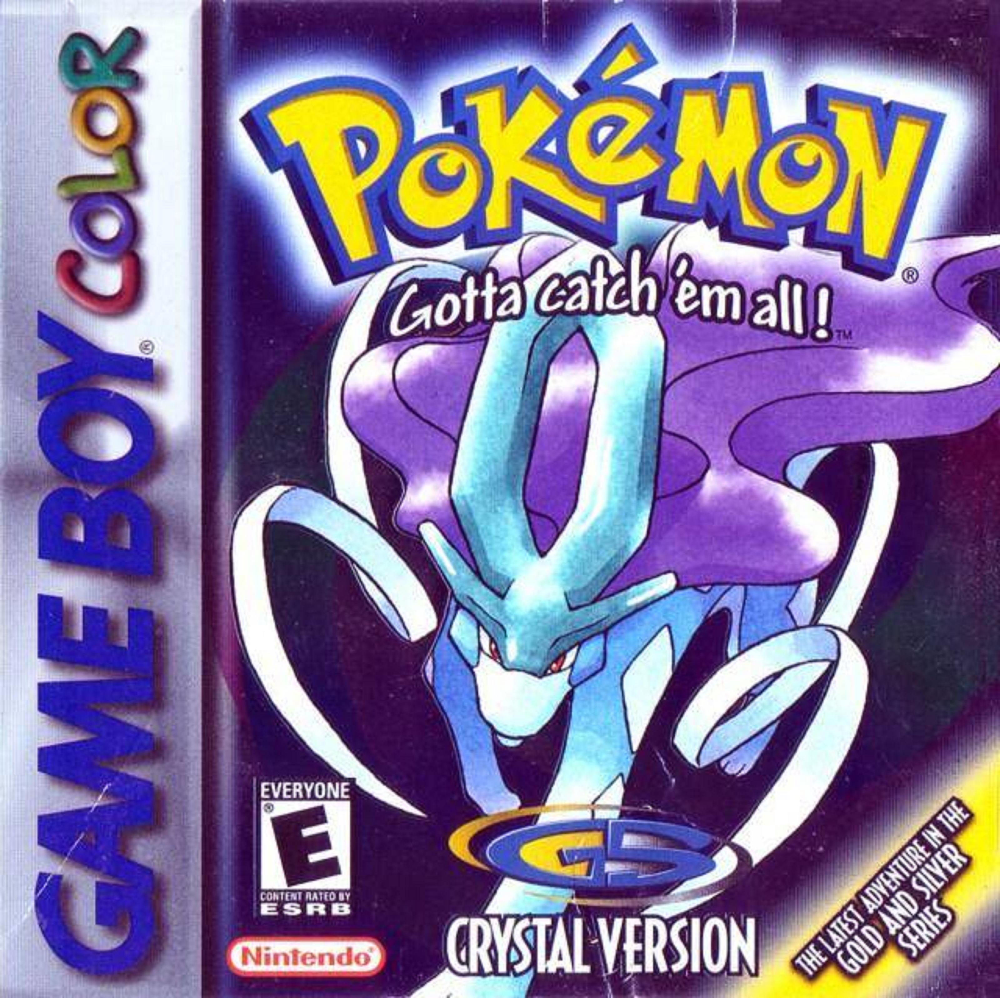 |
Pokémon Rubí y Zafiro
|
Descripción: Pokémon Rubí y Pokémon Zafiro son los primeros videojuegos de Pokémon de la tercera generación.Esta versión cuenta con una calidad gráfica superior a sus antiguas ediciones y novedades en lo que se refiere al entrenamiento de los Pokémon, una región nueva, Hoenn, y también nuevos Pokémon, en concreto 135 nuevas especies.
Fecha de publicación: 21 de noviembre de 2002 (Japón), 19 de marzo de 2003 (EE. UU.) y 25 de julio de 2003 (Europa) Plataforma: Game Boy Advance Publicado por: Nintendo Desarrollado por: Game Freak | 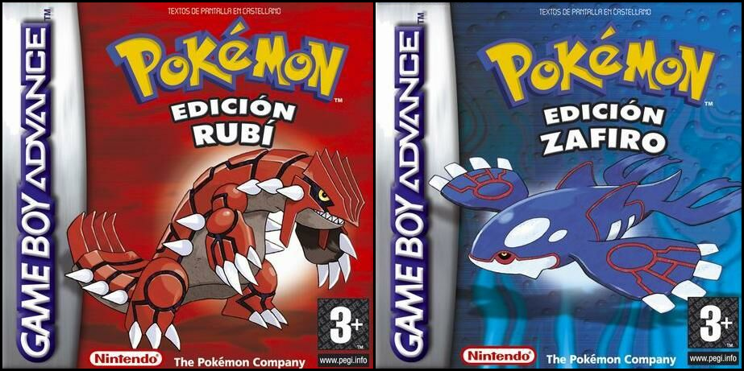 |
Pokémon Rojo Fuego y Verde Hoja
|
Descripción: Pokémon Rojo Fuego y Pokémon Verde Hoja son las versiones reeditadas de los juegos originales Pokémon Rojo y Pokémon Verde (Rojo y Azul fuera de Japón), con las novedades de los juegos para Game Boy Advance de Pokémon Rubí, Pokémon Zafiro y Pokémon Esmeralda.
Fecha de publicación: 1 de enero de 2004 (Japón), 7 de septiembre de 2004 (EE. UU.) y 1 de octubre de 2004 (Europa) Plataforma: Game Boy Advance Publicado por: Nintendo Desarrollado por: Game Freak | 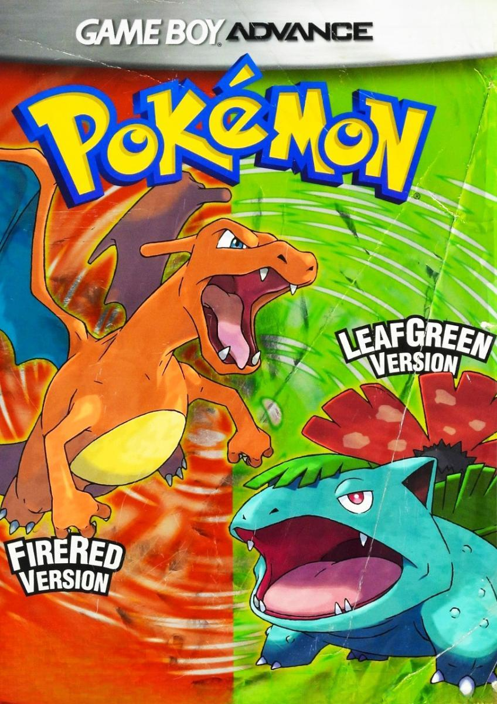 |
Pokémon Esmeralda
|
Descripción: Pokémon Edición Esmeralda es la quinta versión, después de Pokémon Rubí y Zafiro y Pokémon Rojo Fuego y Verde Hoja , y el último juego de la tercera generación de la serie de videojuegos Pokémon.
Fecha de publicación: 16 de septiembre de 2004 (Japón), 1 de mayo de 2005 (EE. UU.) y 21 de octubre de 2005 (Europa) Plataforma: Game Boy Advance Publicado por: Nintendo Desarrollado por: Game Freak | 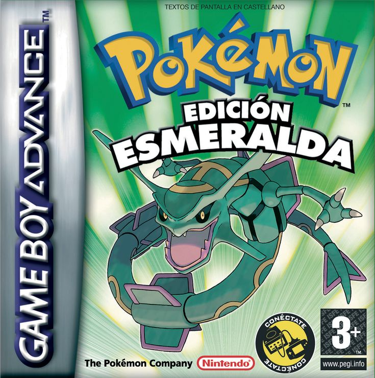 |
Pokémon Diamante y Perla
|
Descripción: Pokémon Diamante y Pokémon Perla son los primeros videojuegos de la cuarta generación de Pokémon y el primer dúo de videojuegos RPG para Nintendo DS1.
Fecha de publicación: 28 de septiembre de 2006 (Japón), 22 de abril de 2007 (EE. UU.) y 27 de julio de 2007 (Europa) Plataforma: Nintendo DS Publicado por: Nintendo Desarrollado por: Game Freak |  |
Pokémon Platino
|
Descripción: Pokémon Platino, también llamado "Pokémon Edición Platino", es la edición superior del dúo Pokémon Diamante y Pokémon Perla.
Fecha de publicación: 13 de septiembre de 2008 (Japón), 22 de marzo de 2009 (EE. UU.) y 22 de mayo de 2009 (Europa) Plataforma: Nintendo DS Publicado por: Nintendo Desarrollado por: Game Freak | 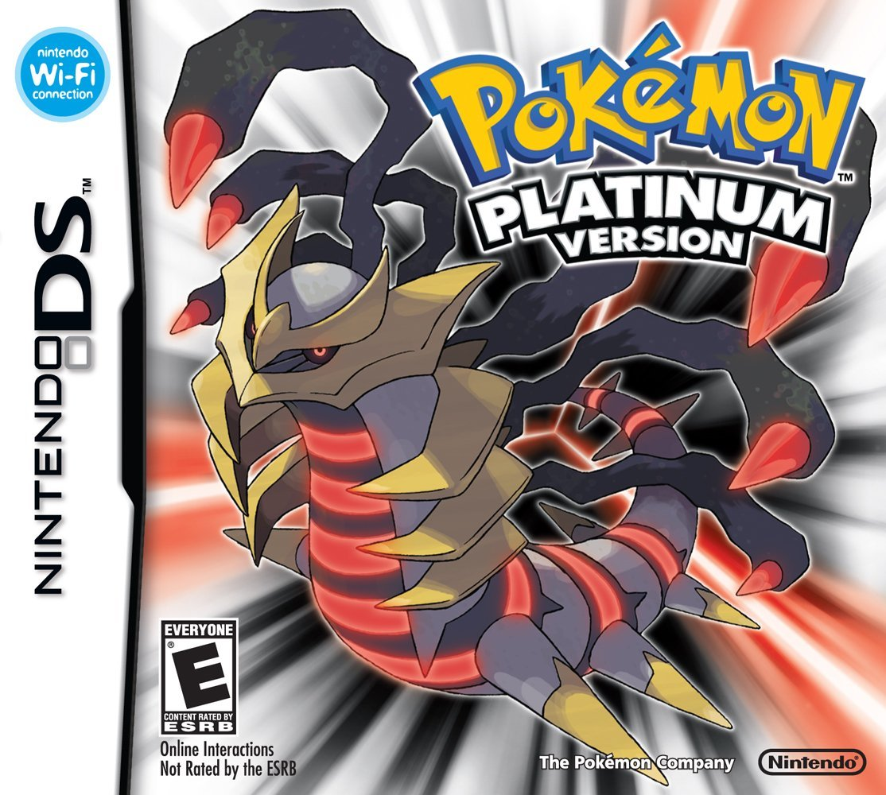 |
Pokémon HeartGold y SoulSilver
|
Descripción: Pokémon Oro HeartGold y Pokémon Plata SoulSilver son dos videojuegos de Pokémon pertenecientes a la cuarta generación para la consola Nintendo DS. Se trata de los remakes de los videojuegos de la segunda generación, Pokémon Oro y Pokémon Plata.
Fecha de publicación: 12 de septiembre de 2009 (Japón), 14 de marzo de 2010 (EE. UU.) y 26 de marzo de 2010 (Europa) Plataforma: Nintendo DS Publicado por: Nintendo Desarrollado por: Game Freak | 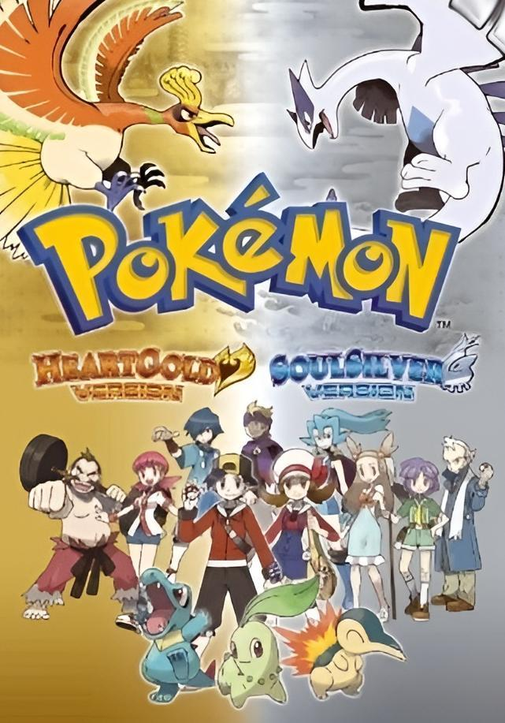 |
Pokémon Blanco y Negro
|
Descripción: Pokémon Negro y Pokémon Blanco son dos videojuegos de Pokémon pertenecientes a la quinta generación.
Fecha de publicación: Japón: 18 de septiembre del 2010, América: 6 de marzo del 2011, Australia: 10 de marzo del 2011, Europa: 4 de marzo del 2011 Plataforma: Nintendo DS Publicado por: Nintendo Desarrollado por: Game Freak | 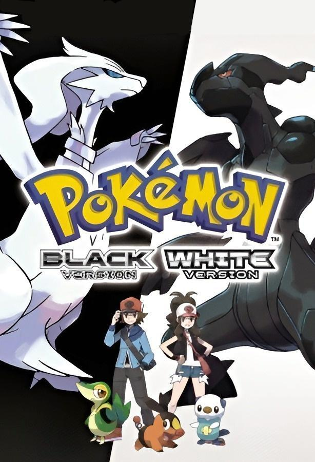 |
Pokémon Blanco 2 y Negro 2
|
Descripción: Pokémon Negro 2 y Pokémon Blanco 2 son dos videojuegos pertenecientes a la quinta generación y secuela de Pokémon Negro y Pokémon Blanco.
Fecha de publicación: Japón: 23 de junio de 2012, América: 7 de octubre de 2012, Australia: 11 de octubre de 2012, Europa: 11 de octubre de 2012 (España), 12 de octubre de 2012 (resto de Europa) Plataforma: Nintendo DS Publicado por: Nintendo Desarrollado por: Game Freak | 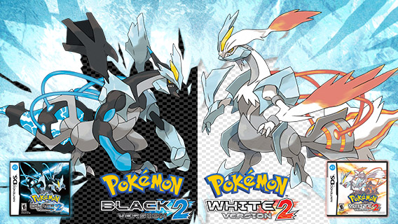 |
Pokémon X y Y
|
Descripción: Pokémon X y Pokémon Y son dos videojuegos de RPG y aventura, los cuales inauguran la sexta generación de la saga.
Fecha de publicación: Japón: 12 de octubre de 2013, América: 12 de octubre de 2013, Europa: 4 de octubre de 2013 Plataforma: Nintendo DS Publicado por: Nintendo, The Pokémon Company Desarrollado por: Game Freak | 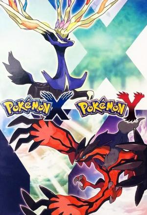 |
Pokémon Rubí Omega y Zafiro Alfa
|
Descripción: Pokémon Rubí Omega y Pokémon Zafiro Alfa son dos videojuegos que pertenecen a la sexta generación y los remakes de Pokémon Rubí y Pokémon Zafiro.
Fecha de publicación: 21 de noviembre de 2014 (Japón), 28 de noviembre de 2014 (América) y 28 de noviembre de 2014 (Europa) Plataforma: Nintendo 3DS Publicado por: Nintendo Desarrollado por: Game Freak | 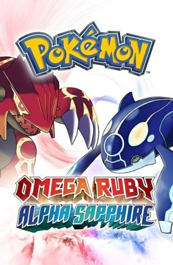 |
Pokémon Sol y Luna
|
Descripción: Pokémon Sol y Pokémon Luna son dos videojuegos pertenecientes a la séptima generación.
Fecha de publicación: 18 de noviembre de 2016 (Japón), 18 de noviembre de 2016 (América) y 23 de noviembre de 2016 (Europa) Plataforma: Nintendo 3DS Publicado por: Nintendo Desarrollado por: Game Freak |  |
Pokémon Ultrasol y Ultraluna
|
Descripción: Pokémon Ultrasol y Pokémon Ultraluna son el segundo dúo de videojuegos principales de la séptima generación, desarrollados para la familia de consolas Nintendo 3DS, sucediendo a Pokémon Sol y Pokémon Luna. Estos tienen la posibilidad de seleccionar entre nueve idiomas.
Fecha de publicación: 17 de noviembre de 2017 (Japón), 17 de noviembre de 2017 (América) y 17 de noviembre de 2017 (Europa) Plataforma: Nintendo 3DS Publicado por: Nintendo Desarrollado por: Game Freak | 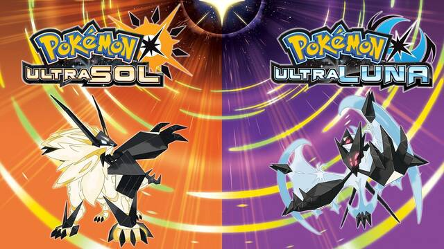 |
Pokémon: Let's Go, Pikachu! y Let's Go, Eevee!
|
Descripción: Pokémon: Let's Go, Pikachu! y Pokémon: Let's Go, Eevee! son dos videojuegos principales pertenecientes a la séptima generación para la consola Nintendo Switch. Se basan en el videojuego de la primera generación Pokémon Amarillo, aunque aportando ciertas novedades a la experiencia, por lo que pueden considerarse como remakes de este.
Fecha de publicación: 16 de noviembre de 2018 (Japón), 16 de noviembre de 2018 (América) y 16 de noviembre de 2018 (Europa) Plataforma: Nintendo Switch Publicado por: Nintendo Desarrollado por: Game Freak |  |
Pokémon Espada y Escudo
|
Descripción: Pokémon Espada y Pokémon Escudo son un dúo de videojuegos principales pertenecientes a la octava generación, desarrollados para la consola Nintendo Switch. Se trata de los primeros videojuegos de Pokémon en la serie principal que no son remakes de títulos anteriores y que no están basados en un juego de la serie principal anterior. Se desarrollan en la región de Galar, inspirada en el Reino Unido, y presentan un nuevo sistema de combate llamado Dynamax, que permite a los Pokémon aumentar su tamaño y poder durante las batallas.
Fecha de publicación: 15 de noviembre de 2019 (Japón), 15 de noviembre de 2019 (América) y 15 de noviembre de 2019 (Europa) Plataforma: Nintendo Switch Publicado por: Nintendo Desarrollado por: Game Freak | 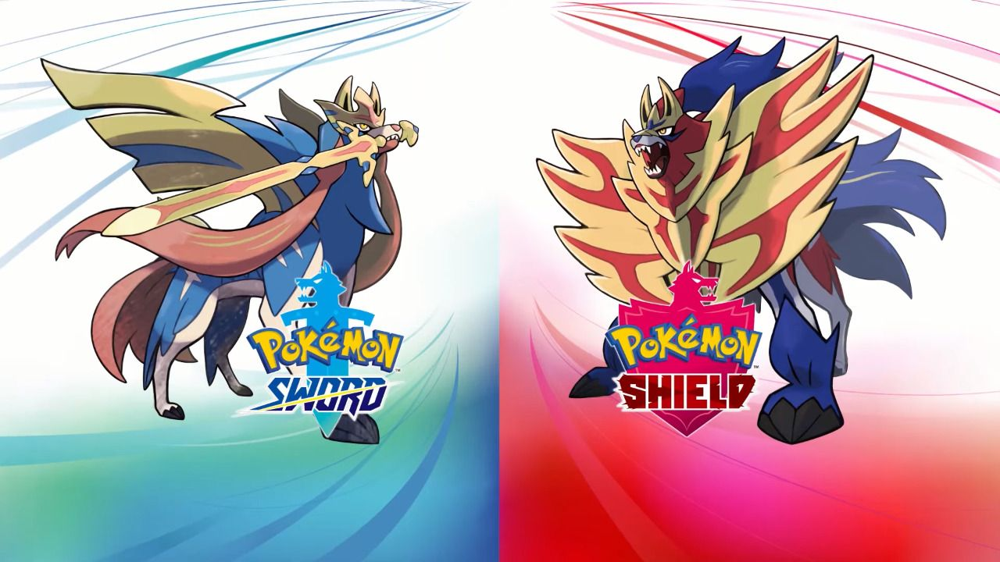 |
Pokémon Diamante Brillante y Perla Reluciente
|
Descripción: Pokémon Diamante Brillante y Pokémon Perla Reluciente son dos videojuegos principales pertenecientes a la octava generación para la consola Nintendo Switch. Se trata de los remakes de los videojuegos de cuarta generación, Pokémon Diamante y Pokémon Perla. En estas ediciones solo aparecen Pokémon de la primera a la cuarta generación, como en los videojuegos originales (excepto las formas regionales de estos Pokémon, que no aparecen).
Fecha de publicación: 19 de noviembre de 2021 (Japón), 19 de noviembre de 2021 (América) y 19 de noviembre de 2021 (Europa) Plataforma: Nintendo Switch Publicado por: Nintendo Desarrollado por: ILCA | 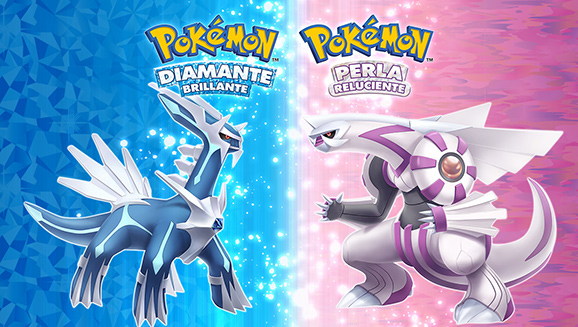 |
Leyendas Pokémon: Arceus
|
Descripción: Leyendas Pokémon: Arceus es un videojuego perteneciente a la octava generación, desarrollado para la consola Nintendo Switch. Se trata de una precuela en la historia de Pokémon Diamante Brillante y Perla Reluciente, situándose en la región feudal de Hisui, la Sinnoh de antaño.
Fecha de publicación: 28 de enero de 2022 (Japón), 28 de enero de 2022 (América) y 28 de enero de 2022 (Europa) Plataforma: Nintendo Switch Publicado por: Nintendo Desarrollado por: Game Freak | 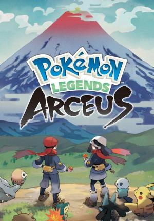 |
Pokémon Escarlata y Púrpura
|
Descripción: Pokémon Escarlata y Pokémon Púrpura son los videojuegos de la línea principal que inauguran la novena generación. Se desarrollan en la región de Paldea, inspirada en la Península Ibérica, y presentan un mundo abierto donde los jugadores pueden explorar libremente y completar misiones a su propio ritmo. Estos juegos introducen nuevas mecánicas de juego, como el sistema de Teracristalización, que permite a los Pokémon cambiar de tipo temporalmente durante las batallas.
Fecha de publicación: 18 de noviembre de 2022 (Japón), 18 de noviembre de 2022 (América) y 18 de noviembre de 2022 (Europa) Plataforma: Nintendo Switch Publicado por: Nintendo Desarrollado por: Game Freak |  |
Leyendas Pokémon: Z-A
|
Descripción: Leyendas Pokémon: Z-A es un videojuego perteneciente a la novena generación, desarrollado para la consola Nintendo Switch y con una versión para la Nintendo Switch 2. Es el primer juego de la saga principal en contar con traducción al español de Hispanoamérica. También es el primer juego de la saga principal en tener una versión para distintas consolas fuera de la Consola virtual.
Fecha de publicación: Anunciado para 2025 Plataforma: Nintendo Switch Publicado por: Nintendo Desarrollado por: Game Freak | 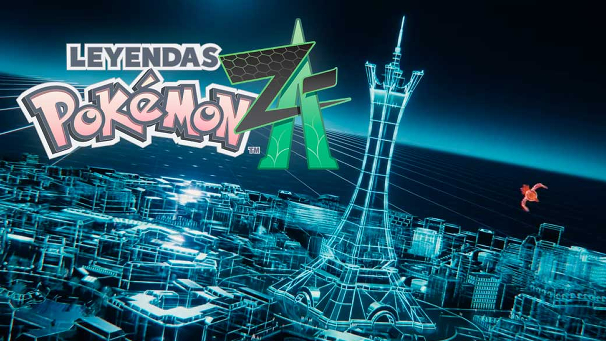 |